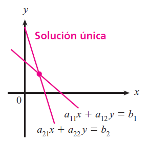
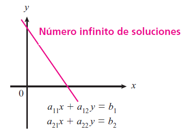
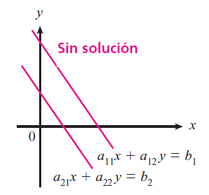

Considérese el siguiente sistema de dos ecuaciones lineales con dos incógnitas $x$ y $y$: \begin{align} a_{11}x + a_{12}y & = b_1 \\ a_{21}x + a_{22}y & = b_2 \\ \end{align}
| Solución única | Número infinito de soluciones | Sin solución | |
|---|---|---|---|
| Descripción | Si solo existe un par de números bien definidos $(x, y)$ que satisfacen el sistema, entonces el sistema tiene solución única. | Si existe un par de números $(x, y(x))$ o $(x(y), y)$ donde una incógnita queda en términos de la otra, entonces el sistema tiene un número infinito de soluciones. | Si no existe un solo par $(x, y)$ que satisface el sistema, entonces el sistema no tiene solución. |
| Gráfica |  |
 |
 |
| Relación entre rectas | No paralelas | Coincidentes | Paralelas |
| Puntos de intersección | Un punto de intersección | Número infinito de puntos de intersección | Sin puntos de intersección |
| Condición | Si y solo si $$ a_{11}a_{22} - a_{12}a_{21} \neq 0 $$ | Si y solo si $$ a_{11}a_{22} - a_{12}a_{21} = 0 $$ | Si y solo si $$ a_{11}a_{22} - a_{12}a_{21} = 0 $$ |